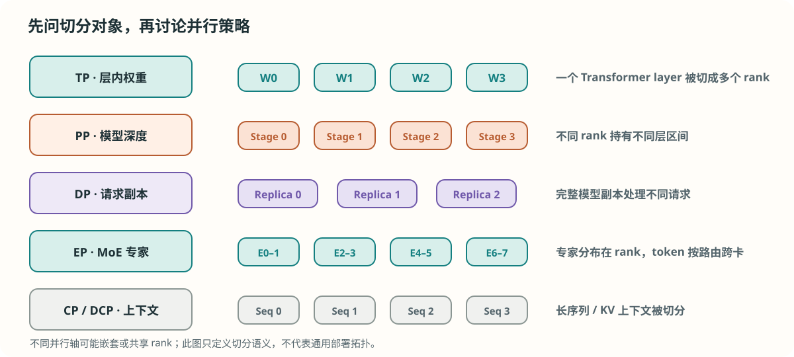
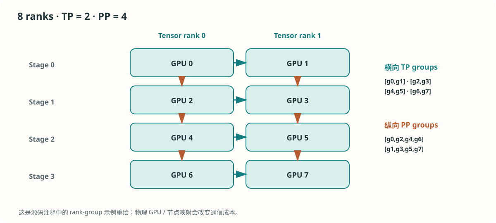

第 11 章 · 分布式并行
分布式并行架构：TP、PP、DP、EP 与 Attention-DP
从 GPU rank、模型层与请求批次的切分方式出发，理解 SGLang 并行 group 如何组织计算与通信。
多 GPU 推理最容易产生的误解，是把所有并行策略都理解成“把同一个模型复制到更多卡”。TP、PP、DP、EP 与 Context Parallelism 切分不同对象；Attention-DP 与 MoE 子组还可能在同一批 global ranks 中交错组织。
读完本章，你应该能
- 区分 TP/PP/DP/EP/CP 的切分对象
- 理解 TP/PP rank group
- 解释 Attention-DP 与 MoE-EP 的子组差异
- 用 CPU toy 实验复原 8-rank 分组。
1. 并行化到底切分什么？
看到 --tp-size 8、--dp-size 8 或 --ep-size 8，不能把它们都理解成“8 张卡运行 8 份模型”。TP 切分一层的权重 / 激活，PP 切分模型深度，DP 切分请求副本，EP 切分 MoE 专家。它们改变的是不同的数据对象、通信路径和容量边界。
反例：8 个 DP replica 通常各自持有完整模型副本；8 个 TP rank 则共同完成一个副本中的同一层计算。GPU 数相同，权重驻留、请求路由和 collective 成本都不同。
2. 五种并行轴的职责
先按“被切分的数学对象”分类，再记配置参数。
| 轴 | 切分对象 | 通信 / 代价 | 主要目的 |
|---|---|---|---|
| TP | 层内矩阵、heads、FFN 权重 | collective 同步 | 层内计算与容量 |
| PP | Transformer 层区间 | stage 间 activation | 分散模型深度与权重 |
| DP | 请求 / batch | 副本路由、负载不均 | 增加独立请求处理能力 |
| EP | MoE experts | token dispatch / combine All-to-All | 分散专家权重 |
| CP / DCP | 上下文序列 / Decode KV | 上下文间通信 | 长上下文扩展 |

3. TP 与 PP 如何组成 rank 网格
SGLang 的 initialize_model_parallel() 以 TP 和 PP 宽度建立主要模型并行布局。源码注释给出 8 ranks、TP=2、PP=4 的例子：每个 stage 内部组成 TP group；同一 tensor rank 则跨多个 stage 组成 PP group。

4. Attention 与 MoE 可以有不同子组
当前运行时还维护 Attention-DP、Attention-CP、Decode-CP、MoE-DP、MoE-EP 等 group。一个模型的 attention 与 MoE 层可以在同一批 global ranks 中使用不同通信子组。源码示例展示 8-rank 布局中 Attention-CP/TP 与 MoE-EP/DP 的不同分组。
get_dp_tp_group() 进一步说明：启用 Attention-DP 时，一个 DP rank 的 token batch 使用 attention-TP group；否则使用完整 TP group。不能把所有子组宽度无条件相乘成一个“GPU 倍数”。
5. 从 world size 到 group width
当前 SGLang 模型并行初始化路径的主要 world size 由 TP 与 PP 宽度共同确定：
这是主要 TP/PP world 的关系，不是把 Attention-DP、CP、MoE-EP 等所有附加子组继续相乘的通用公式。整除关系、模型结构、backend 和设备后端仍会约束实际拓扑。CPU toy 实验只复原 group 成员，不创建 process group。
6. 从哪里读源码？
- parallel_state.py：
initialize_model_parallel()与 rank-group 注释。 - dp_attention.py：
get_dp_tp_group()与 Attention-DP。 - Server arguments：配置字段与 CLI 参数。
- Megatron-LM：层内模型并行的经典研究背景。
7. 交互：选择一个并行轴
选择一个并行轴，观察被切分对象与主要通信代价。该交互是概念对照，不会启动 GPU 进程。
Parallelism explorer
TP：同一层由多个 rank 协作计算；关注 collective、权重切分和设备互联。
PP：不同 rank 持有不同层区间；关注 stage 负载、activation 传递与 pipeline bubble。
DP：副本处理独立请求；关注路由、负载均衡和每副本容量。
EP：专家分布在 rank；关注 Top-K dispatch、All-to-All 与专家负载。
8. 部署选择与常见误区
- TP 不是 DP；EP 也不是普通 TP。
- PP 不一定平均切层，模型结构与 stage 负载会影响划分。
- 更多 rank 不保证更快；通信、同步、batch 与 KV 内存都可能抵消收益。
- 配置参数名与兼容矩阵随版本变化，必须核对目标 commit 的启动校验。
公平比较应固定模型、精度、输入输出长度和并发，记录 TTFT、TPOT/ITL、吞吐、显存、rank 利用率与 collective 时间。
参考资料与版本边界
实现快照：sgl-project/sglang@ac0380c7faf9cece3ca32ffe75815af7c585acea。rank 图为源码注释重绘；CPU 示例不模拟 NCCL 性能。